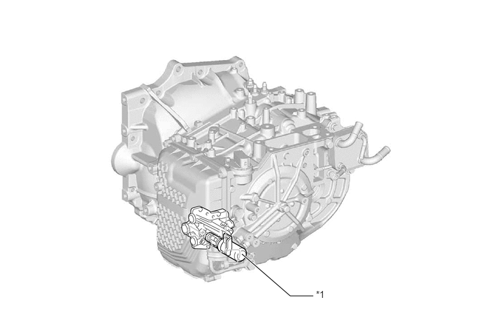
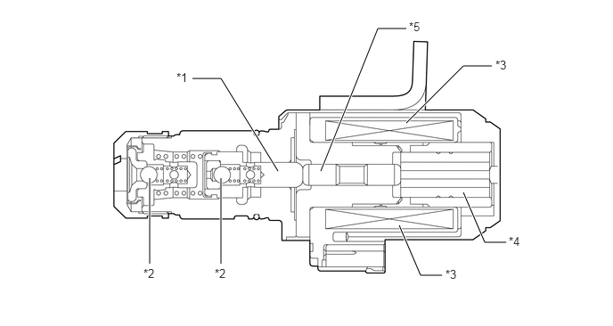
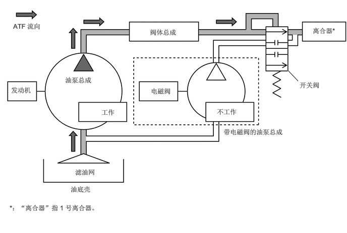
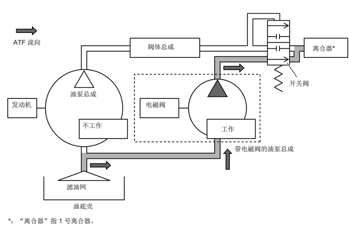
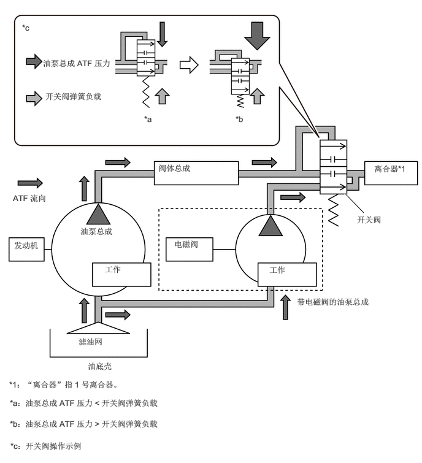

构造
配有带电磁阀的油泵总成。带电磁阀的油泵总成安装在油泵总成上。即使在怠速停止期间，带电磁阀的油泵总成也可实现稳定的 ATF 供应。
带电磁阀的油泵总成为与变速器油道开关阀集成于一体的电磁油泵 (EMOP)，既缩小了系统尺寸又减轻了重量。
带电磁阀的油泵总成仅在怠速停止期间工作。发动机运行时由常规油泵总成提供 ATF。

| *1 | 带电磁阀的油泵总成 | - | - |
带电磁阀的油泵总成由电磁阀活塞、柱塞轴、柱塞电磁阀总成、单向球和电磁线圈总成等零件组成。

| *1 | 电磁阀活塞 | *2 | 单向球 |
| *3 | 电磁线圈总成 | *4 | 柱塞线圈总成 |
| *5 | 柱塞轴 | - | - |
工作原理
AT 内的油泵总成利用发动机动力产生 ATF 压力。此时，油泵总成的 ATF 压力大于开关阀的弹簧负载。因此，开关阀会沿关闭带电磁阀的油泵总成油道的方向工作。

怠速停止期间，油泵总成停止工作。此时，油泵总成的 ATF 压力消失。因此，开关阀的弹簧负载大于油泵总成的 ATF 压力。因此，开关阀沿打开带电磁阀的油泵总成油道的方向工作，并向离合器供给 ATF 工作压力。

发动机重新起动时，使用带电磁阀的油泵总成产生的 ATF 压力和常规油泵总成产生的 ATF 压力。此时，油泵总成的 ATF 压力大于开关阀的弹簧负载。因此，开关阀沿关闭带电磁阀的油泵总成油道的方向工作，并停止使用来自带电磁阀的油泵总成的 ATF 压力。发动机启停 ECU 判定发动机正在运行时将停止带电磁阀的油泵总成。
